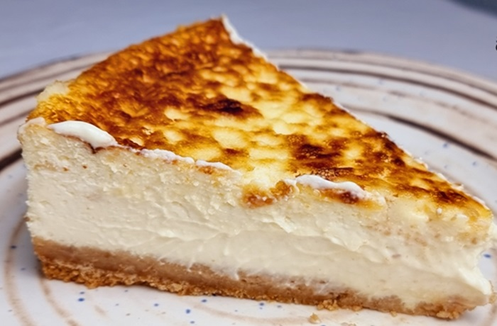

cheesecake tradicional

Ingredientes:
Para la base
- 200 g de galletas María trituradas
- 90 g de mantequilla derretida

Para el relleno
- 900 g de queso crema (a temperatura ambiente)
- 200 g de azúcar
- 1 cdita de vainilla
- 4 huevos grandes
- 200 ml de crema ácida.

Preparacion:
Utiliza las galletas María trituradas y la mantequilla derretida para la base, prensados en un molde desmontable de 22–24 cm.
El relleno clásico requiere 900 g de queso crema a temperatura ambiente, batido suavemente con 200 g de azúcar, 1 cdita de vainilla, 4 huevos grandes y 200 ml de crema ácida.
Horneado: Precalienta el horno a 160 °C. Vierte la mezcla sobre la base y hornea durante 60–70 minutos, hasta que el centro aún se vea ligeramente tembloroso.
Enfriado: Apaga el horno y deja enfriar el cheesecake dentro con la puerta entreabierta por 1 hora para evitar grietas, luego refrigéralo por lo menos 4 horas (ideal toda la noche) antes de desmoldar.